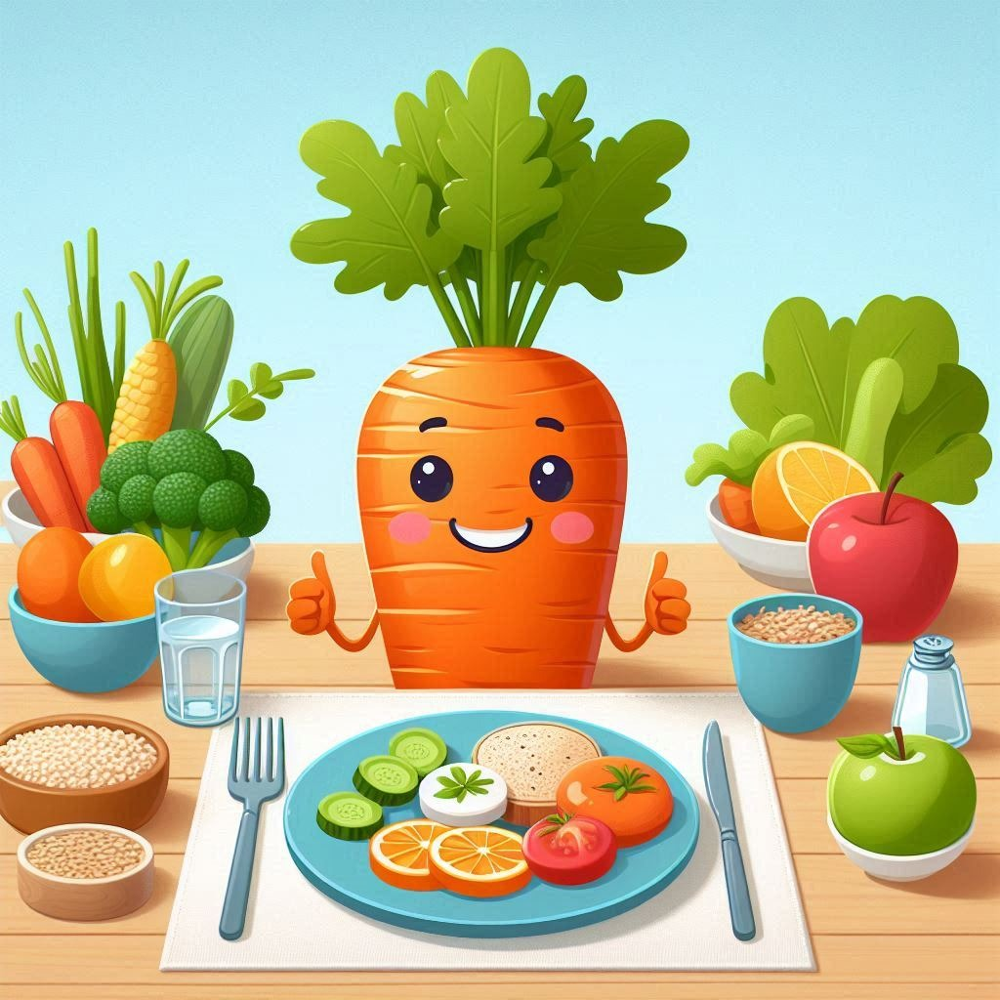

Bem-vindo ao FoodMind
O FoodMind é um site pensado para quem busca melhorar a alimentação e
adotar um estilo de vida saudável, contando com o apoio de
nutricionistas especializados e um chat interativo para tirar dúvidas
em tempo real. Nele, você encontra receitas práticas e saborosas
alinhadas aos seus objetivos, dicas personalizadas para otimizar sua
dieta, orientações sobre planejamento alimentar e artigos informativos
sobre nutrição e bem-estar. Além disso, o site oferece um espaço
acolhedor onde você pode se inspirar, compartilhar experiências e
aprender a transformar sua relação com a comida de maneira leve e
prazerosa.
